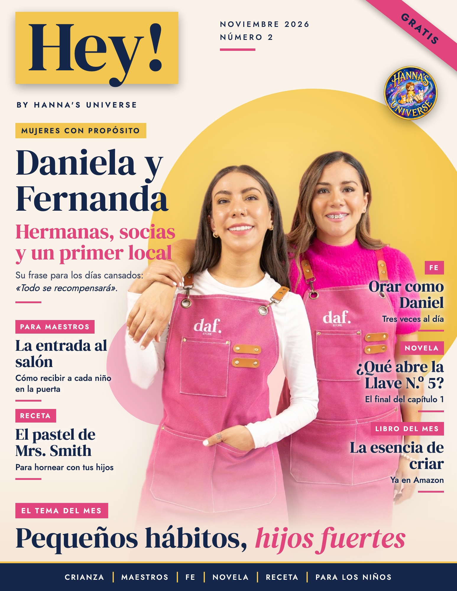
Ya disponible
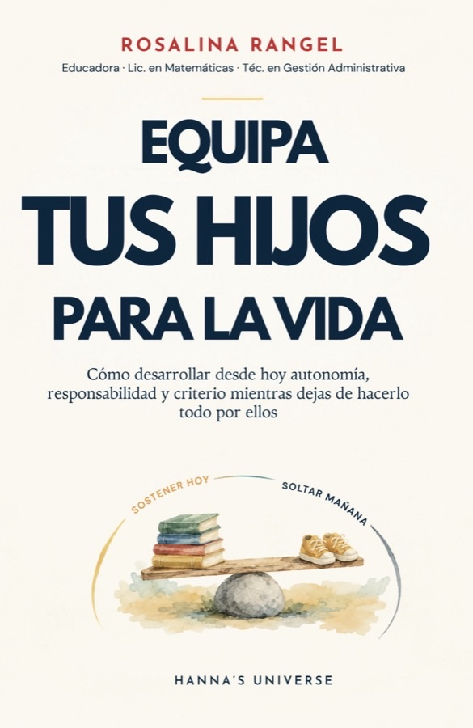
Equipa tus hijos para la vida
Cómo desarrollar desde hoy autonomía, responsabilidad y criterio mientras dejas de hacerlo todo por ellos.
Sostener hoy. Soltar mañana.
- Doce capítulos prácticos para el día a día de tu familia.
- Cada capítulo cierra con una oración, una recompensa para ti y una escena de Hanna.
- Nace de la investigación y de tres décadas en la educación.
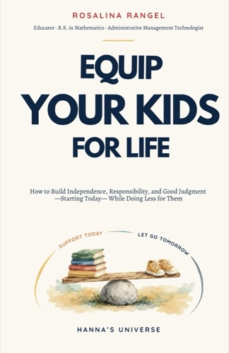
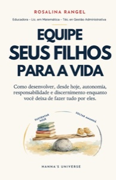
En Amazon y en hannasuniverse.comEn español, inglés y portugués
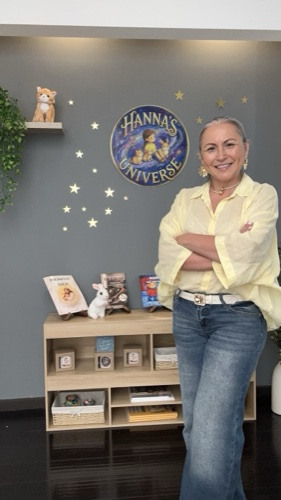
Rosalina RangelEducadora y escritora · Hanna's Universe
Pequeños hábitos, hijos fuertes
Querida amiga:
Qué alegría encontrarnos otra vez. El mes pasado hablamos de dejar que nuestros hijos lo intenten. Este mes damos el paso que sigue: lo que repiten todos los días.
En mi casa teníamos una regla: papá trabaja y provee; mamá hace la compra, cocina y sirve; y los niños arreglan la cocina. Mis hijos ya son adultos, y hasta hoy, cada vez que nos reunimos, la regla sigue en pie. Recogen y limpian sin que nadie se lo pida, lo hacen automáticamente. Y ahora, además, ellos también nos cocinan.
Los hábitos se forman con cosas pequeñas: la cama tendida, las manos juntas antes de comer, el cuento de la noche. Elige uno para este mes y repítelo con calma. En unas semanas lo hará sin que se lo pidas.
Imprime las páginas 21 y 22 para tus hijos, comparte la revista con una amiga y cuéntame qué hábito eligieron en tu casa. Aquí estaré en diciembre.
Con cariño, Rosalina
- 4Para papásHábitos que forman
- 5Para maestrosLa entrada al salón
- 6Momento de feOrar como Daniel
- 8Mujeres con propósitoHermanas y socias
- 10Moda infantilMéxico y Estados Unidos
- 13Hey, mamá!LUMA, bolsos con historia
- 15Novela por entregasLa buhardilla
- 20Recetas de la buhardillaPastel de manzana
- 21HistorietaUn hábito nuevo
- 22Para pintar¡Llegó el otoño!
- 24AnúnciateTarifas para tu negocio
Pequeños hábitos, hijos fuertes
Lavarse los dientes, tender la cama, dar gracias antes de comer. Lo que tu hijo repite cada día va formando quién es, y cinco minutos de constancia diaria forman su carácter.
Por Rosalina Rangel · autora de Equipa tus hijos para la vida
Empieza con uno. Este mes elige un solo hábito y dale toda tu atención: tender su cama, poner la ropa sucia en el cesto o leer diez minutos antes de dormir. Cuando ese ya le salga solo, sumas el siguiente.
Pégalo a algo que ya hacen. Un hábito nuevo se aprende más rápido justo después de uno viejo: «Después de lavarte los dientes, tiendes tu cama». La rutina de siempre se vuelve el recordatorio.
Misma hora, mismo lugar. Los niños se sienten seguros cuando saben qué sigue. Al repetirlo a la misma hora y en el mismo lugar, su cuerpo lo recuerda antes que su cabeza.
Hazlo tú primero. Tu hijo te mira todo el día. Si te ve leer, dar gracias y ordenar tus cosas, eso aprende. Tu ejemplo es la lección que más se le queda.
Para este mes
- Escribe el hábito en una hoja y dibújalo con tu hijo.
- Pégala donde lo va a hacer: el baño, su cuarto, la mesa.
- Cada día que lo cumpla, pone una estrella.
- Con siete estrellas, celebren con un paseo o su postre favorito.
- A fin de mes, elige el siguiente hábito y cuéntale cuál será.
No nos cansemos, pues, de hacer bien; porque a su tiempo segaremos, si no desmayamos.Gálatas 6:9 · RVR1960
Habrá días en que se le olvide. Recuérdaselo con cariño y sigan. Un día lo verás tender su cama sin que nadie se lo pida, y vas a sonreír.
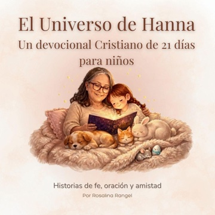
Los primeros cinco minutos: una entrada que ordena el día
Así como empieza la mañana, sigue el resto del día. Una entrada que se repite igual cada día le da calma a tus alumnos, porque saben qué sigue.
- Recíbelos en la puerta.Un saludo con su nombre y una mirada a los ojos. En un cartel, dibuja tres saludos para que cada niño escoja el suyo: choque de manos, abrazo o saludo con la mano.
- Cada cosa en su lugar.Mochila en el gancho, lonchera en la canasta y tarea en la bandeja. Un dibujo en cada lugar les recuerda dónde va cada cosa.
- Una actividad tranquila en su mesa.Un dibujo, una hoja de trazos o un libro. Mientras llegan todos, el salón se llena de calma.
- ¿Cómo llegué hoy?Cada niño pone su pinza en el termómetro de emociones. Así sabes a quién acercarte primero.
- Empiecen juntos.La misma canción o una oración corta, y el plan del día en el pizarrón, con dibujos.
Dale tres semanas
Las dos primeras semanas tú recuerdas cada paso. A la tercera, los niños lo hacen solos y hasta le enseñan la rutina al alumno nuevo.
Llévalo a casa
Comparte con las familias el orden de la mañana. Cuando en casa siguen los mismos pasos, el niño llega al salón tranquilo y listo para aprender.
Lee con tus alumnos la historieta de la página 21: Hanna también está aprendiendo un hábito nuevo.
La historia de Daniel: el valor de un buen hábito
Una lección de constancia para leer en familia
Un corazón constante en un nuevo hogar
Hace mucho tiempo, un joven llamado Daniel llegó a vivir a un país muy lejano llamado Babilonia. Aunque todo a su alrededor era nuevo y diferente, Daniel llevaba consigo un regalo muy valioso en su corazón: la enseñanza de mantenerse unido a Dios a través de la oración.
Daniel tenía una costumbre. Tres veces al día apartaba un momento para hablar con Dios: en la mañana, al mediodía y al atardecer. Subía a su habitación en el piso de arriba, abría las ventanas que daban hacia Jerusalén, se ponía de rodillas y le daba gracias.
Un hábito que da fortaleza
Con el tiempo, Daniel creció y se convirtió en un gran líder, respetado por su sabiduría y honestidad. Cuando llegaron momentos difíciles y pruebas inesperadas, la costumbre de orar tres veces al día le dio paz y valentía, y Dios lo cuidó hasta en el foso de los leones.
Sembrando hábitos para la vida
¿Qué es un hábito? Un hábito es algo que hacemos de manera regular y constante, como lavarnos los dientes, dar un abrazo de buenas noches o dar las gracias antes de comer. Los buenos hábitos nos dan seguridad y nos hacen fuertes por dentro.
La constancia de Daniel
En la Biblia encontramos la clave de su rutina diaria:
«Sin embargo, cuando Daniel se enteró de que se había firmado la ley, fue a su casa y se arrodilló en su habitación del piso de arriba, con las ventanas abiertas hacia Jerusalén. Oraba tres veces al día tal como siempre lo había hecho, dando gracias a su Dios».Daniel 6:10 · NTV
El impacto del hábito en familia
El poder de la rutina diaria. Al igual que Daniel mantuvo la costumbre de orar cada día, los pequeños hábitos de cada día le dan a un niño una base firme que lo acompaña toda la vida.
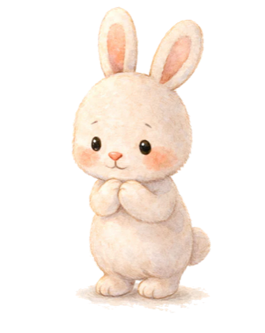
Un rincón para conversar en casa
Para la mamá: Lo que repetimos hoy con paciencia es lo que nuestros hijos van a recordar mañana. Den gracias juntos o lean un cuento a la misma hora cada día: así la casa se siente segura.
Para el pequeño: ¿Sabías que puedes hablar con Dios en cualquier momento? Al despertar, cuando estás jugando o antes de dormir, hablar con Él es un hábito hermoso que llena tu corazón de paz.
La esencia de criar
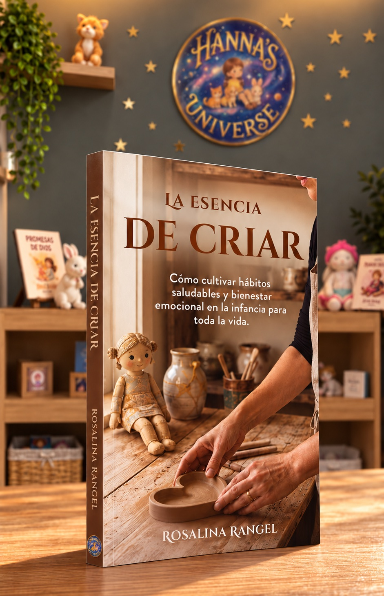
Cómo cultivar hábitos saludables y bienestar emocional en la infancia para toda la vida.
Pequeños hábitos, hijos fuertes.
- Hábitos que dan orden y sentido a la vida en familia.
- Límites que forman el corazón de tu hijo.
- Una presencia constante que le da seguridad.
- Cómo reparar después de un mal día, y crecer juntos.
«Un hábito bien sembrado es tiempo recuperado; es la libertad de vivir el presente sin el peso de lo pendiente.»
Rosalina Rangel · La esencia de criarLo que vas a encontrar adentro
- El lugar que ocupa una madre
- El cerebro del niño necesita estructura
- Cuando el límite provoca emociones
- El niño necesita adultos constantes
- Educar es formar hábitos con sentido
- Constancia y coherencia del adulto
- Errores, reparación y gracia
- Esperanza
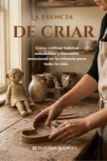
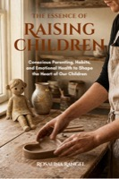
Impreso y en e-bookEn español e inglés
Rosalina RangelEducadora y escritora · Hanna's Universe
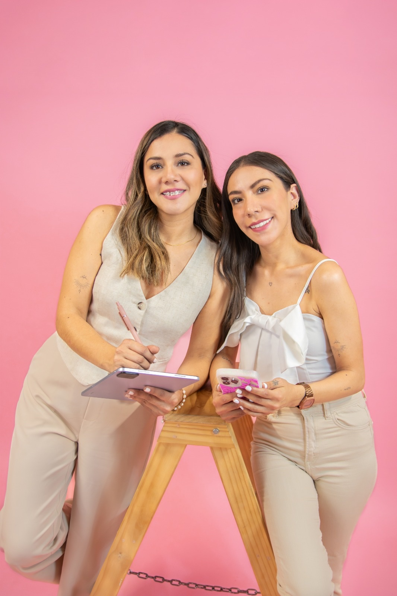
Daniela y Fernanda
DAF Store & DAF Events · San Luis Potosí, México
«Todo se recompensará.»
Son hermanas, son socias y este año abrieron su primer local. Esta es su historia.
¿Cómo empezó DAF?
DAF comenzó mucho antes de tener un nombre. Trabajábamos en el mundo de la impresión y el diseño, y por nuestra cuenta empezamos a recibir pedidos de papelería creativa, regalos personalizados, boxes y detalles especiales. Al principio eran trabajos esporádicos, pero poco a poco nuestros clientes fueron creciendo y aquella idea empezó a tomar forma.
En 2020, durante la pandemia, decidimos dar el paso y formalizar ese proyecto que llevábamos años construyendo. Comenzamos con regalos a domicilio y ventas por redes sociales, sin imaginar todo lo que vendría después. El nombre nació de unir la Da de Daniela y la F de Fernanda; en pocas palabras, DAF somos nosotras.
Tres años después sumamos DAF Events, nuestra rama enfocada en barras para eventos, y en 2026 cumplimos otro de nuestros sueños: abrir nuestro primer local físico. Después de seis años trabajando exclusivamente por redes sociales y puntos de entrega, hoy tenemos un espacio propio construido con las ganancias de nuestro esfuerzo. ¡Y sentimos que apenas estamos comenzando!
¿Cuál ha sido el momento más difícil como hermanas y socias y cómo lo superaron?
Abrir nuestro local ha sido uno de los retos más grandes hasta ahora. Durante años, DAF fue un ingreso extra; hoy implica gastos fijos, nuevas responsabilidades y el compromiso de hacer que el negocio siga creciendo. Claro que hay incertidumbre y días en los que nos preguntamos si estamos haciendo lo correcto, pero también sabemos que crecer significa atrevernos a salir de nuestra zona de confort.
Como hermanas somos muy unidas y compartimos la confianza de que podemos resolver las cosas hablando y buscando lo mejor para ambas. Hemos aprendido que no necesitamos pensar igual en todo, sino recordar que estamos del mismo lado y que queremos construir el mismo sueño.
¿Qué lugar tiene la fe en su negocio?
La fe es fundamental en nuestras vidas y también en DAF. Somos hermanas cristianas y creemos que Dios nos acompaña en cada etapa, especialmente cuando damos pasos que nos dan miedo y todavía no sabemos cómo van a resultar las cosas.
Confiamos en las capacidades, la creatividad y las oportunidades que Él nos ha dado, pero también creemos que nos corresponde trabajar y hacer nuestra parte. Nuestra familia ha sido otra de nuestras grandes bendiciones: nuestros papás y nuestro hermano siempre han creído en nosotras y nos han apoyado de muchas maneras.
Para nosotras, tener fe no significa esperar a que todo suceda por sí solo, sino trabajar con propósito, agradecer cada avance y confiar en Dios durante el proceso.
¿Cómo equilibran su familia y su trabajo?
¡A veces nuestras pláticas de hermanas terminan convirtiéndose en juntas de trabajo! Compartimos tantas ideas y proyectos que desconectarnos no siempre es fácil, pero procuramos recordar que, antes de ser socias, somos hermanas.
Nuestros papás también forman parte de esta historia. Nos han acompañado en madrugadas, montajes y eventos que terminan muy tarde. Su apoyo nos motiva a seguir trabajando, porque uno de nuestros sueños es que el crecimiento de DAF nos permita darles un poquito de todo lo que han hecho por nosotras.
Queremos construir una empresa sólida, pero también disfrutar el camino y compartir sus frutos con las personas que han estado a nuestro lado desde el principio.
¿Qué hábito de cada día las sostiene?
La constancia. Hemos aprendido que emprender también significa trabajar en esos días en los que toca madrugar, desvelarnos o sacrificar un fin de semana. En esta etapa hemos dedicado mucho tiempo a DAF Events mientras trabajamos para consolidar nuestro local.
Hemos despertado a las cinco de la mañana para ir a eventos y terminado de madrugada después de una boda o unos quince años. Muchas veces nuestros papás están ahí con nosotras, así que tenemos una frase que repetimos para motivarnos: «Todo se recompensará».
Nos recuerda que no trabajamos solamente por lo que DAF es hoy, sino por lo que queremos construir. Soñamos con que el negocio crezca, nos dé estabilidad y nos permita recompensar a nuestros papás por todo el amor y esfuerzo que siguen poniendo en nosotras. Mientras tanto, seguimos avanzando paso a paso, confiando en Dios y haciendo nuestra parte.
¿Qué le dirían a una mujer que quiere empezar?
Que se atreva, aunque no tenga todo resuelto. DAF comenzó con pedidos pequeños, sin un local y sin saber hasta dónde podíamos llegar. Durante años fuimos construyendo poco a poco, hasta sentirnos listas para dar un paso más grande.
Emprender implica aprender sobre la marcha, adaptarse y entender que las cosas no siempre suceden al ritmo que imaginamos. También significa confiar en nuestro trabajo, aprender a valorar lo que hacemos y no compararnos con el proceso de los demás.
No necesitamos tener todo perfecto para comenzar, ni esperar a que todo el mundo crea en nuestro proyecto para creer en él nosotras mismas. Hay que atreverse, trabajar con constancia, rodearse de personas que sumen y mantener la fe incluso en los momentos difíciles. A veces, el primer paso es simplemente darnos la oportunidad de descubrir hasta dónde podemos llegar.
Una frase de ustedes que las represente
«Todo se recompensará». Es la frase que nos repetimos en los días cansados y cuando pensamos en todo lo que queremos construir. Nos recuerda que cada esfuerzo tiene un propósito y que nuestro sueño va más allá de tener un negocio: queremos crecer juntas, honrar el apoyo de nuestra familia y crear algo de lo que nos sintamos orgullosas.
Conoce su negocio
DAF Store & DAF Events. Papelería creativa, regalos personalizados, boxes y barras para eventos.
José Santos Chocano #106A, Col. ISSSTE, C.P. 78280, San Luis Potosí, S.L.P.
WhatsApp +52 1 56 4926 1301
Instagram @daf.storeslp · @daf.events
¿Tienes una historia que contar?
Escríbenos a rlrangel.quintero@gmail.com. Tu testimonio puede inspirar a otra mujer a dar el primer paso.
Entre el sol y el frío
En México, noviembre amanece fresco y a mediodía calienta. Por eso se viste en capas.
Abajo, una camiseta de algodón. Encima, un cárdigan o una chamarra ligera. La mezclilla aguanta todo el día. Cuando sube el sol, la capa de arriba se dobla y se guarda en la mochila.
Paleta México
Tonos de tierra: camel, verde olivo, mostaza y terracota, con un toque de azul.
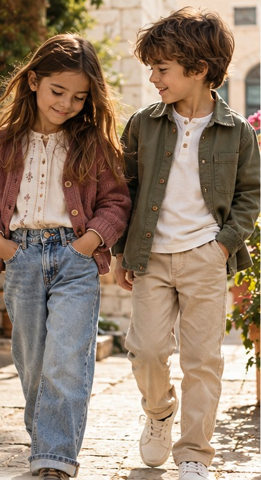
Ideas de looks
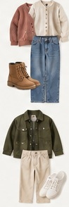
En tendencia · México
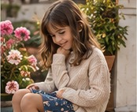
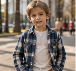
El invierno en capas
En Estados Unidos el frío llega en serio: abrigo, gorro y botas.
La chamarra acolchada es la pieza principal. Debajo va un suéter de punto o una camisa de cuadros. Este año regresan las chamarras de estilo universitario, con letra bordada, y los pantalones de pana.
Paleta USA
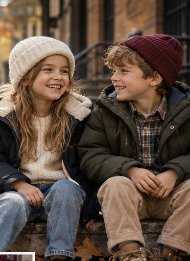
En tendencia · USA
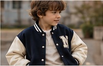
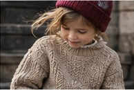
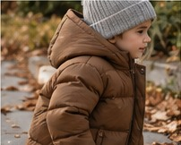
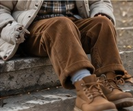
Ideas de looks
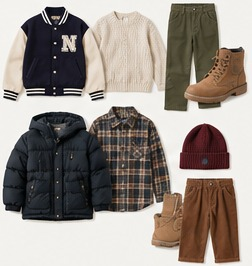
El look de Hanna este mes
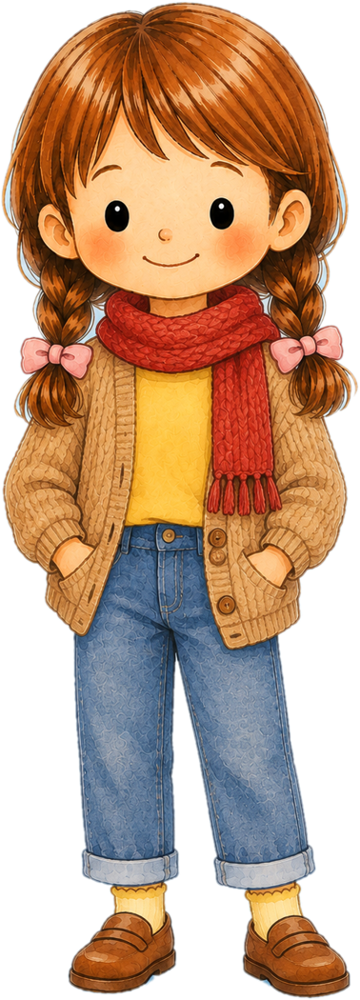
Hanna no suelta su camiseta amarilla, así que este mes le pusimos encima un cárdigan tejido color camel. Abajo, pantalón de mezclilla doblado, calcetines amarillos y sus zapatos café de piel. Para las mañanas de viento, una bufanda roja, del color de las manzanas del jardín.
Tip para mamá: el amarillo se ve precioso con los tonos de tierra. Si tu hija tiene una prenda favorita, úsala de base y cambia solo lo de encima.
Se viste solo, en orden
Tú eliges la ropa; tu hijo se la pone siguiendo los números. Recorta esta tira y pégala en su clóset.
- Ropa interior y calcetinesLo primero, sentado en la cama.
- PantalónUn pie y luego el otro.
- CamisetaLa etiqueta va atrás.
- Cárdigan o suéterLos botones de abajo hacia arriba.
- ZapatosLos botines con cierre son los más fáciles.
- Chamarra y bufandaYa en la puerta, antes de salir.
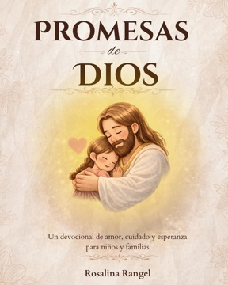
LUMA
el encanto
de los detalles
Bolsos y accesorios hechos a mano en Greenville
Cada bolso de LUMA sale del taller de Eliana Sierra, en Greenville, Carolina del Sur. Ella escoge cada tela y le busca un forro alegre, de esos que dan gusto al abrir el bolso. Son piezas para la vida real: cabe lo de toda la semana y se ven bonitas en el café con las amigas.
light up
your style
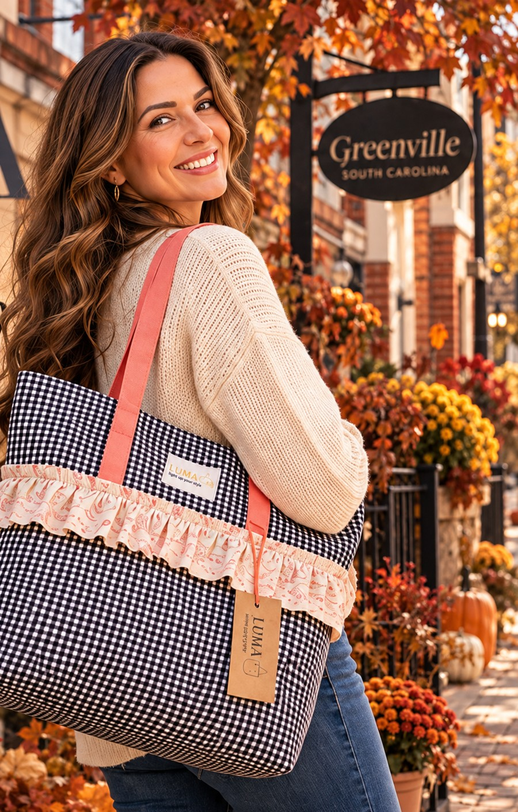
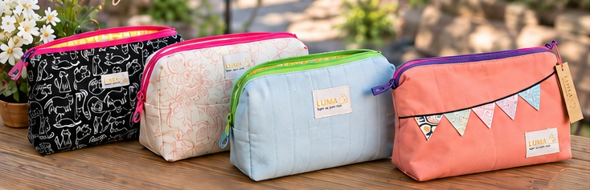
Una diseñadora con historia
Eliana Sierra
Eliana nació en Cali, Colombia, y estudió diseño de modas en ESMODA, una escuela muy reconocida de la ciudad que hoy ya no existe. Después se especializó en diseño por computador. Ha cosido vestidos de novia de alta costura y ha trabajado en empresas de Carolina del Sur.
Vive en Greenville, y ahí nació LUMA, su marca de bolsos y accesorios. La empezó porque quería seguir diseñando, y sus piezas las piensa para mujeres que pasan el día de un lado a otro con los niños.
«Cada bolso es una oportunidad para crear algo útil, alegre y especial.»Eliana Sierra
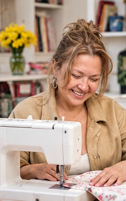
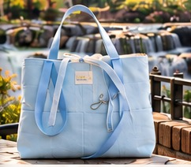
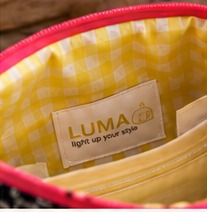
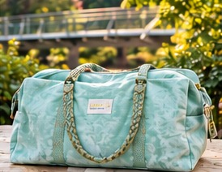
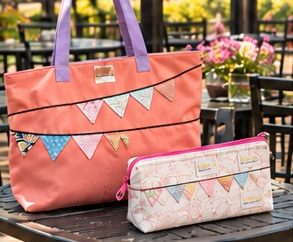
LUMA
light up your style
Diseños de
Eliana Sierra
Greenville, Carolina del Sur
Tel. +1 (864) 365-7153
Los secretos de la buhardilla
Capítulo 1 · El cuaderno de Mrs. Smith
Entrega 2 · Final del capítulo 1
Por Rosalina Rangel
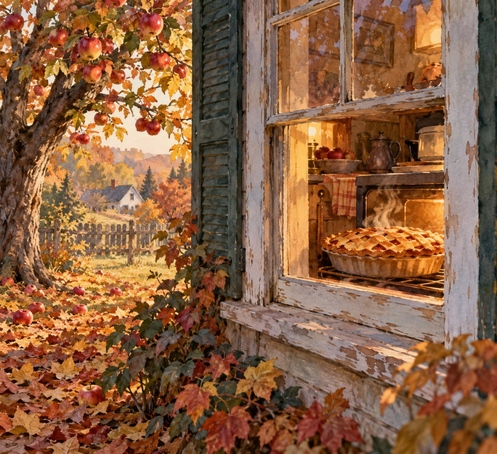
En la entrega anterior
Hanna encontró una llave dorada en el dintel de la escalera de caracol. Con el permiso de mamá, subió a la buhardilla con Michiko, Dogui y Sagu, y solo abrieron una caja: la más grande de la Familia Smith. Adentro esperaba un cuaderno viejo de cuero, y al abrirlo, Hanna susurró: «Esto no es solo papel…».
(Continuación)
I. La penumbra del desván
Un silencio denso y helado pareció apoderarse de la buhardilla, como si el tiempo mismo hubiera detenido su marcha al abrir aquel cuaderno. El viento en el exterior soplaba con ráfagas suaves que hacían crujir la ventana redonda del fondo, y las sombras largas de los baúles apilados se proyectaban sobre las vigas de madera como siluetas gigantescas.
Dogui dio un brinco hacia atrás, con las orejas completamente gachas y la cola apretada entre las patas. El corazón le retumbaba en el pecho y un temblor helado le recorría el lomo; el miedo a aquel espacio desconocido se le metía hasta los huesos. Sin embargo, en medio del temor, algo en sus ojos se encendió de inmediato: la curiosidad era un fuego mucho más fuerte que el susto. Sin poder evitarlo, dio un paso tembloroso hacia adelante, estirando el cuello con la nariz inquieta hacia el centro de la habitación.
Michiko apretó las garras contra el suelo de madera, atento a cada rincón con sus ojos de felino brillando en la penumbra, mientras Sagu pegaba sus largas orejas a la espalda, conteniendo el aliento para no perderse el menor murmullo del aire.
En el centro del polvo flotante, sobre las páginas amarillentas del cuaderno de cuero negro gastado por los años, las letras escritas a mano parecían pulsar con vida propia.
En ese preciso instante, un aroma denso, tibio y profundamente dulce brotó de entre las páginas, invadiendo cada rincón de la buhardilla. Olía a canela fresca, a mantequilla derretida y a manzanas recién horneadas. Los cuatro amigos se miraron desconcertados; no había ninguna cocina cerca ni explicación lógica para semejante perfume en un desván olvidado durante décadas.
Con la voz temblorosa, Hanna comenzó a leer las primeras líneas trazadas en la página inicial con una tinta negra y elegante:
«Si estas páginas han llegado a tus manos, es porque la casa ha vuelto a abrir sus puertas. No temas al polvo del tiempo; los muros guardan los susurros de quienes los habitan. Aquí dejo lo que el tiempo no pudo borrar: no el oro ni la plata, sino el rastro de los días en que esta casa respiraba secretos».
II. El código de Mrs. Smith
El eco de la lectura pareció flotar en el ambiente como una presencia invisible. La atmósfera amenazante comenzó a transformarse en un enigma fascinante.
Hanna pasó la página con sumo cuidado para no rasgar el papel antiguo. Frente a ellos no había una simple lista de anotaciones: era un mapa oculto. En la parte superior leyeron el título “Pastel de manzana y canela de Mrs. Smith”, pero las cantidades de los ingredientes tenían proporciones extrañas y varias letras a lo largo del texto aparecían marcadas con pequeños puntos de tinta roja.
Junto al título, una frase trazada con urgencia y pulso firme revelaba la verdadera naturaleza del cuaderno:
«Las cantidades no miden harina ni azúcar; descifran la combinación. Quien hornee este mensaje y siga la clave bajo la última capa, sabrá qué oculta el muro del fondo».
—No es una receta normal… —susurró Dogui, con los ojos brillando de pura fascinación mientras el extraño olor a pastel horneado se volvía cada vez más intenso en el aire—. ¡Es un código encriptado!
—Miren las letras marcadas —señaló Michiko, inclinándose sobre el papel con la garra extendida hacia los puntos rojos.
Pero antes de que pudieran intentar descifrar la primera palabra del código, un crujido seco, pesado y rítmico resonó en la base de la escalera de caracol. Crec-crec. Pasos desconocidos subían lentamente en la oscuridad, acercándose directamente hacia la puerta cerrada de la buhardilla…
III. La extraña coincidencia
Dogui se pegó de un salto contra la pierna de Hanna, con un temblor que le sacudía el cuerpo. Tenía las orejas completamente plegadas y los ojos desorbitados. Quería esconderse detrás del baúl más lejano, pero la curiosidad le pesaba más que el miedo y no podía apartar la mirada de la entrada.
Michiko erizó el pelo del lomo, alerta como una estatua de mármol, mientras Sagu se quedaba inmóvil, sin atreverse a pestañear.
La puerta de la buhardilla giró sobre sus bisagras con un chirrido agudo y prolongado.
—¡Niños! —sonrió mamá, apareciendo en el umbral iluminado.
En las manos llevaba una bandeja de madera de la que salía un humo denso, tibio y tentador. Ese mismo e inconfundible perfume a canela, azúcar y fruta horneada que llevaba minutos llenando la buhardilla envolvió el lugar con renovada fuerza.
Los cuatro amigos se quedaron petrificados, mirando a mamá y luego al cuaderno abierto en las manos de Hanna. La confusión les heló la sangre: el aroma a pastel de manzana… ¿salía realmente del viejo manuscrito de cuero o venía subiendo con mamá por la escalera en esta extraña y casi imposible coincidencia?
—Aproveché que el manzano del jardín está cargadísimo de fruta para hornearles algo especial mientras ordenan —dijo mamá, dando un paso hacia ellos—. Hice un pastel de manzana casero.
Un escalofrío helado y profundo recorrió la espalda de Hanna, pasó por el espinazo de Michiko, erizó las orejas de Sagu y le puso la piel de gallina a Dogui. La receta encriptada en el cuaderno antiguo que acababan de descubrir era exactamente la misma que mamá acababa de sacar del horno abajo en la cocina.
—¿Pasa algo? —preguntó mamá, extrañada por el silencio sepulcral y las caras pálidas de los cuatro.
—Mamá… —susurró Hanna con la voz temblorosa, señalando la hoja amarillenta—. Mira esto.
Mamá se acercó con cuidado y depositó la bandeja sobre un baúl plano. Al inclinarse y leer el título del manuscrito y la frase al margen, una sombra de asombro le cruzó el rostro. Los ingredientes de la receta antigua coincidían uno a uno con los que ella acababa de usar.
—Es… es exactamente lo que preparé —murmuró mamá, y un temblor leve también la hizo estremecer a ella.
IV. El secreto bajo la madera
—No es una casualidad —dijo Michiko en un hilo de voz, señalando las marcas rojas sobre las cantidades del texto—. La receta es una clave.
Hanna unió con la yema del dedo los pequeños puntos marcados en el cuaderno mientras el vapor del pastel recién horneado flotaba entre ellos. Al conectar las cifras de la receta, una frase completa terminó de revelarse al pie de la hoja:
«Bajo la tercera tabla del piso, donde la sombra del manzano toca la pared al mediodía, descansa lo que la casa custodia».
Dogui dio un paso tembloroso hacia el centro de la buhardilla, olfateando el piso de madera vieja. Justo en ese momento, un golpe seco y hueco resonó debajo de sus patas, directamente bajo la tercera tabla.
Con un esfuerzo coordinado entre las manos de Hanna, la ayuda de mamá y el impulso de Sagu —que apoyó sus dos patas delanteras para hacer palanca—, la vieja tira de roble cedió con un clac seco, dejando al descubierto una cavidad secreta llena de sombras y una corriente de aire helado.
Mamá acercó la linterna. El haz de luz cortó la penumbra e iluminó un pequeño paño de terciopelo azul marino, deshilachado por el tiempo.
Con dedos fríos, Hanna levantó el envoltorio. Pesaba bastante más de lo esperado. Al desplegar la tela gastada, no hallaron monedas ni joyas resplandecientes. En el centro descansaba un objeto de bronce antiguo, labrado con extraños grabados astronómicos y relieves de hojas. Pero lo que les congeló el aliento no fue la forma de la llave, sino el número y la frase grabados en su empuñadura:
LLAVE N.º 5
«Noli iudicare secundum faciem»
—¿La… la número cinco? —murmuró Hanna en un hilo de voz, leyendo las palabras grabadas con los ojos muy abiertos—. ¡Pero si es la primera caja que abrimos en esta casa! ¿Y qué significa esa frase en latín?
Michiko se inclinó sobre el metal con la mirada fija en el grabado:
—Significa: «No juzgues según las apariencias».
Un silencio sepulcral se apoderó de la buhardilla. La confusión era absoluta: no entendían nada. ¿Dónde estaban las llaves 1, 2, 3 y 4? ¿Por qué esta llave les pedía no juzgar según las apariencias? La dimensión del misterio los superaba por completo.
—No podemos descifrar la quinta llave todavía —dijo mamá con serenidad, pasándole una mano tibia por el hombro a Hanna—. Este es un enigma para el futuro. La casa apenas ha empezado a hablar.
Hanna apretó la pesada llave de bronce en su mano mientras el humo del pastel de manzana se disipaba en el aire. La Llave N.º 5 era un misterio dormido, pero el verdadero viaje apenas comenzaba a desplegar sus alas en la penumbra del desván.
Fin del capítulo 1. El capítulo 2 empieza en el número 3…
Para conversar en familia
¿Qué crees que abre la Llave N.º 5? ¿Y dónde estarán las llaves 1, 2, 3 y 4? Escríbelo o dibújalo aquí.
La receta de Mrs. Smith
Un postre lleno de aromas reconfortantes para hornear juntos mientras descifran las pistas de la historia.
Pastel rústico de manzana y canela
Ingredientes
Para el toque de manzana:
- 3 manzanas grandes (Gala o Granny Smith)
- 1 cucharada de jugo de limón
- 1 cucharadita de canela en polvo
- 2 cucharadas de azúcar morena
Para la base horneada:
- 2 tazas de harina de trigo
- 1 taza de azúcar blanca
- 1 barra (115 g) de mantequilla suave
- 3 huevos
- 1 taza de leche
- 2 cucharaditas de polvo para hornear
- 1 pizca de sal
- 1 cucharadita de esencia de vainilla
Cocina con tus hijos. Ellos lavan las manzanas, miden la harina y revuelven la canela. El cuchillo y el horno quedan en tus manos.
Pasos para revelar el sabor
- Preparación: Calienta el horno a 180 °C (350 °F). Engrasa y enharina un molde redondo de 23 cm (9 pulgadas).
- Las manzanas maceradas: Pela las manzanas y córtalas en láminas finas. Mézclalas en un recipiente con el limón, la canela y el azúcar morena.
- La masa: Bate la mantequilla con el azúcar hasta lograr una consistencia cremosa. Incorpora los huevos uno a uno y suma la vainilla.
- Unión de ingredientes: Agrega la harina, la sal y el polvo para hornear alternando con la leche hasta obtener una mezcla suave.
- Horneado: Mezcla la mitad de las manzanas con la masa y viértela en el molde. Acomoda encima el resto, como una última capa, y hornea de 40 a 45 minutos, hasta que un palillo salga limpio.
- Disfrutar en familia: Deja entibiar, sirve en rebanadas y comparte este instante dulce mientras comentan los misterios de la buhardilla.
— Mrs. Smith
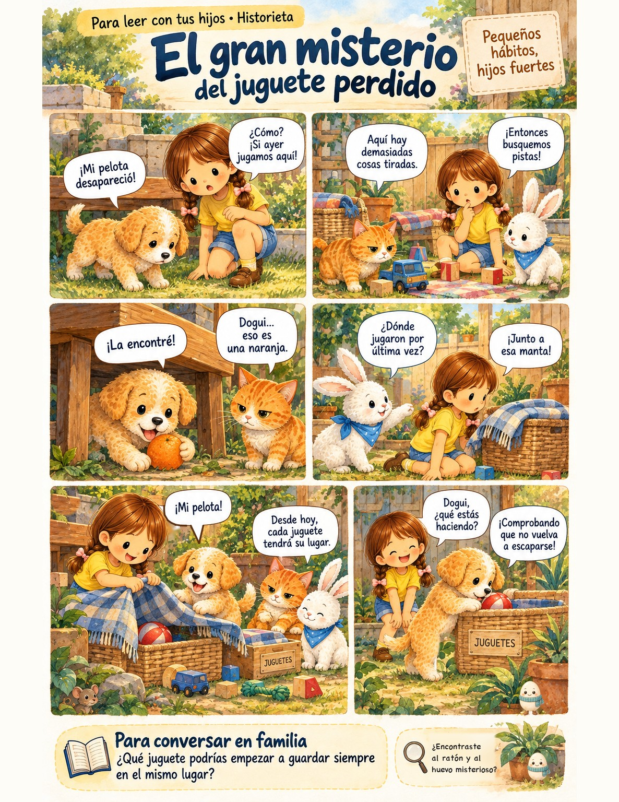
Toca para ver en grande¡Llegó el otoño!
Las hojas caen de los árboles y Hanna sale con Michiko a recoger manzanas para el pastel de Mrs. Smith. Pinta las hojas de rojo, naranja y amarillo, y las manzanas rojas o verdes.
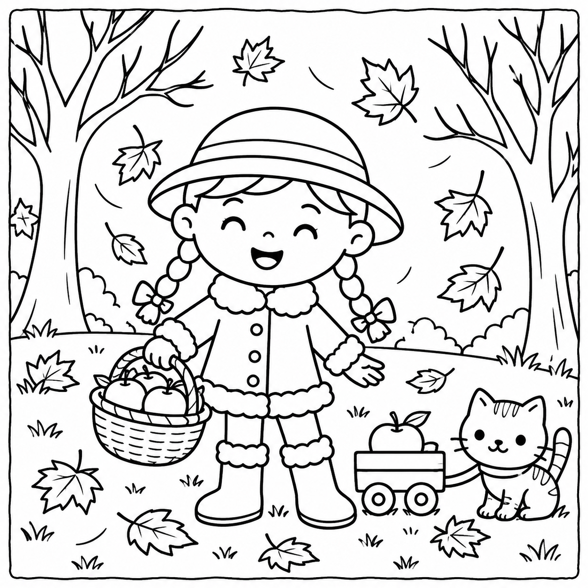
Eclesiastés 3:1 · RVR1960
Mi nombre: Mi edad:
Negocios que hacen posible esta revista
Apóyalos: cada anuncio ayuda a que Hey! by Hanna's Universe siga llegando gratis a tu casa.
Te acompaño a elegir los productos ideales para el cuidado de tu piel y tu maquillaje, con asesoría personalizada. Estoy certificada en Skin Pro.
¿Quieres iniciar tu propio negocio?Te invito a mi equipo de trabajo.
Visítame en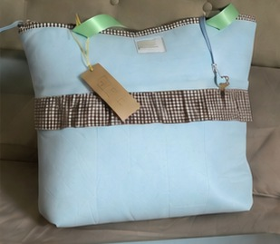
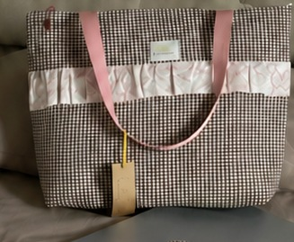
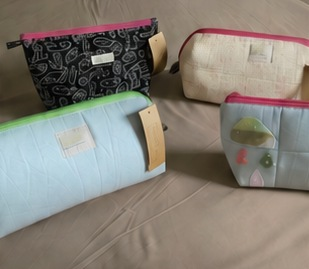
Descubre LUMA: Light up your style. Nuestras piezas están hechas a mano con mucho cuidado, cada una es una obra de arte única, con telas únicas. Disponibles por encargo y en colección.
Tu anuncio aquí
Hey! by Hanna's Universe llega cada mes a familias, maestros e iglesias. Si tu negocio acompaña a los niños y a sus familias, este es tu lugar: librerías, escuelas, ropa y juguetes, clases, emprendimientos de mamás.
Precios de lanzamiento · 50% de descuento para los 10 primeros anunciantes
Precios en dólares estadounidenses. Puedes pagar en tu moneda al tipo de cambio del día.
Hey! by Hanna's Universe es gratis y sale cada mes. Compártela con otra familia y con la maestra de tus hijos.